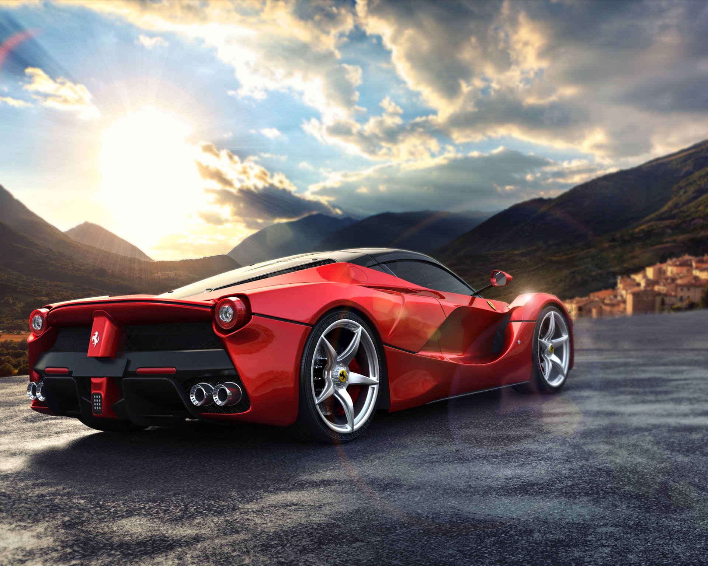

ფერარი (Ferrari S.p.A.) — იტალიური სპორტული მანქანების მრეწველი, რომელიც დაარსდა მარანელოში და მოდენაში (იტალია). კომპანია შექმნა ენცო ფერარიმ 1929 წელს, როგორც სკუდერია ფერარი (Scuderia Ferrari), ხოლო 1949 წელს, როგორც ფერარი სააქციო საზოგადოება (Ferrari S.p.A). მთელი ისტორიის განმავლობაში, ფერარიმ ყველაზე დიდი წარმატება მიაღწია ავტო რბოლებში, განსაკუთრებით ფორმულა ერთში. 1969 წელს, ფინანსური ბრძოლების დროს, ენცო ფერარიმ მიყიდა კომპანიის სპორტული მანქანების განყოფილება ფიატს, იმისთვის რომ დაეზღვია ფინანსური მხარდაჭერა. კომპანია ფერარი, მცირე რაოდენობით უშვებს სხვა პროდუქტებსაც: პასტებს, ფანქრებს, სუნამოს, ტანსაცმელს, მაღალი ხარისხის ველოსიპედებს, მობილურ ტელეფონებს და ლეპტოპ კომპიუტერებს.